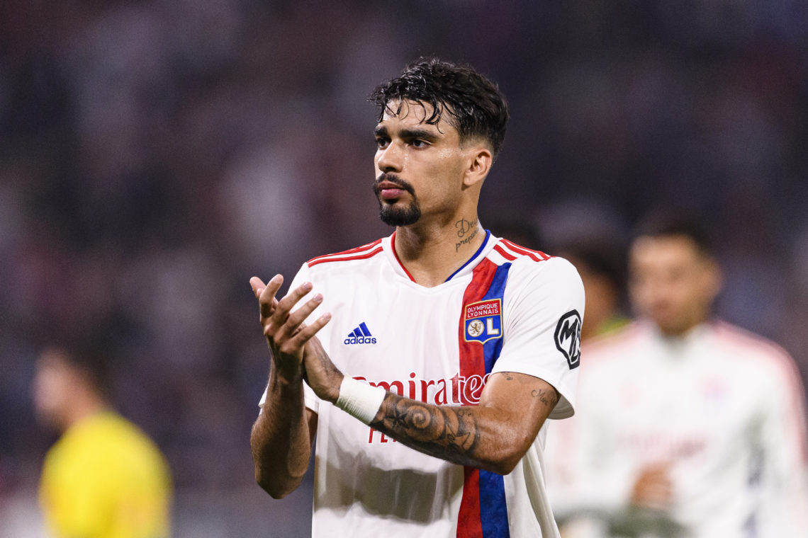
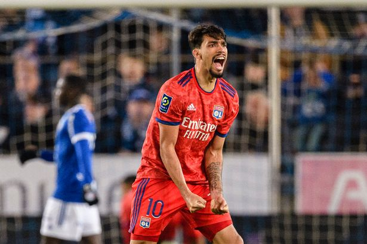
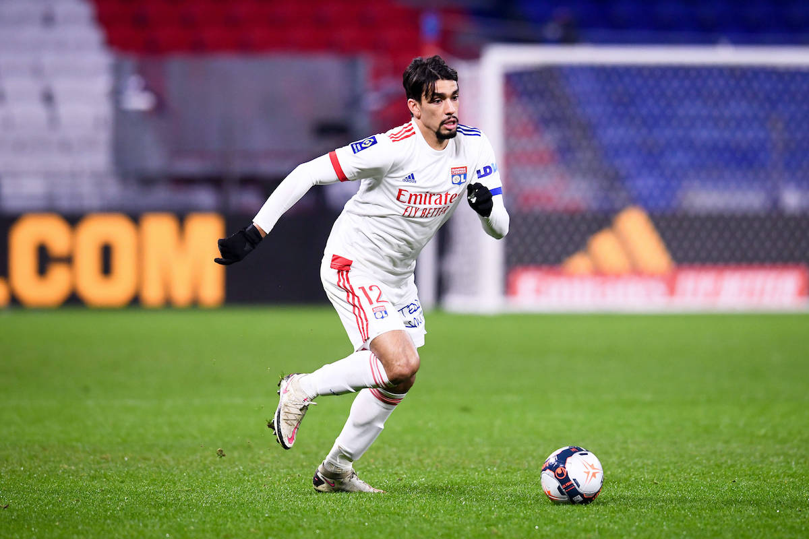

After the 2-2 draw against Chelsea at Stamford Bridge, it's abundantly clear Spurs need a creative midfielder to help advance play down the middle and out of defense.
While names like James Maddison, Nicolo Zaniolo, and Ruslan Malinovskyi have been brought up, I thought to take a look at Lucas Paqueta, a player I believe would be a
better fit for Spurs than any of the other options mentioned above.
To start, Paqueta played an instrumental role in Lyon's attack last season scoring 11 times and assisting 7 in 44 games primarily as an attacking midfielder.
With 33 international caps, regular game time at Lyon, and a contract running until 2025, the 24-year-old might come at a hefty price but one that might be a bargain considering
his suitability in Conte's system.

The Brazilian International's biggest strength is his ability on the ball. He's extremely comfortable dribbling with or without pressure as he currently ranks top 1% of dribbles
completed and dribbles attempted per 90 - at 2.37 and 3.72 respectively. He dribbles past 2.42 players per 90 - enough to place him in the 99th percentile again - and progressively
carries the ball 5.21 times a game. His only caveat to this aspect of his game is his dispossessions and miscontrols which both sit at the bottom 1% of all midfielders in the top 5 leagues.
Paqueta's creativity isn't limited to dribbling though, as he looks to put in through balls which players like Lacazette currently runs to meet. The success rate of these through balls
can be questioned but the passes Paqueta looks for behind the opposition defensive line is the same type of balls we see Son running into during games.

Apart from the player's tendency to play riskier through balls, he himself is very adept at finding space behind opposition lines and running into them himself.
He receives a progressive pass 9.17 times per 90 which firmly places him in the top 1% of all midfielders and in turn, his exceptional 0.37 expected goals per 90.
Currently residing in the attacking midfielder position in Lyon's 3-man midfield trio, he definitely has a tendency of staying higher up the pitch between the opposition midfield
and defensive line - but is still comfortable dropping down to help play the ball out from the back. His 27.76 touches in the attacking third and 4.13 touches in attacking penalty area per 90 is a clear
indication of his willingness to play higher up and create from the opposition half.

Conte has a tendency of attacking down the flanks with his wing backs pushing high. But we also have Heung Min Son on the left side of the pitch looking for passes which penetrate the opposition backline
for him to run into; Paqueta's tendency of playing through balls behind the lines at Lyon might be perfect to ensure Son isn't just getting his through balls from Kane but that he would also get the type
of pass from another option.
Additionally, all the midfield options currently available to Conte's picking are defensive and none can be described as a creative midfielder who can comfortably take the ball from defense and drive it forward to attack.
Paqueta's dribbling stats and his comfortability on the ball might be what Spurs need to ensure they don't get pressed and stuck in their own defensive third.
As mentioned at the beginning, Paqueta wouldn't come at a cheap price, but his creativity in the middle of the pitch and suitability to Conte's system might make the fee worth its price.